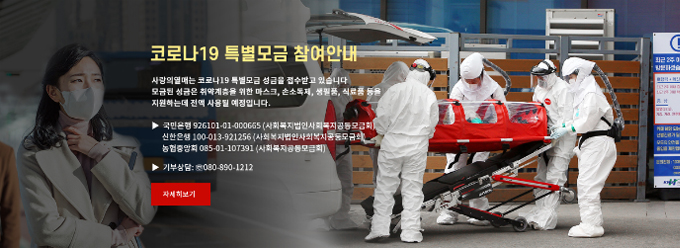

CCK - Special Fundraising for COVID-19
Social solidarity and a new theme for donations
“Overcoming Infectious Disease”
Social solidarity and a new theme for donations
“Overcoming Infectious Disease”

Announcement on joining COVID-19 special fundraising (from Feb. 24, 2020)
Fundraising
In response to a surge in the number of confirmed COVID-19 cases, we provided emergency support of KRW 1 billion (approx. USD 810,045; calculated based on the exchange rate as of Apr. 24 at USD 1 = KRW 1,234.50; the same hereinafter) and began fundraising on Feb. 24 to provide additional essential services.
At the early stage, well-known celebrities and sports stars donated one after another, followed by companies, wealthy people, and ordinary citizens. The money raised amounted to KRW 87.7 billion (approx. USD 71 million) by Apr. 12, making it the second largest amount raised in special fundraising campaigns that we have conducted in the face of social and natural disasters at home and abroad (special fundraising to help the families of the Sewol ferry disaster victims in 2014 raised KRW 114 billion or approx. USD 92.3 million*).
At the early stage, well-known celebrities and sports stars donated one after another, followed by companies, wealthy people, and ordinary citizens. The money raised amounted to KRW 87.7 billion (approx. USD 71 million) by Apr. 12, making it the second largest amount raised in special fundraising campaigns that we have conducted in the face of social and natural disasters at home and abroad (special fundraising to help the families of the Sewol ferry disaster victims in 2014 raised KRW 114 billion or approx. USD 92.3 million*).
* A major disaster that occurred on Apr. 16, 2014 in which the Sewol ferry capsized and sank in waters near Jindo Island enroute from Incheon to Jeju Island, resulting in 304 dead and missing.
1) Celebrity donation relay – List of 50 celebrities
Celebrities made donations, including Don Lee (Ma Dong-seok), Lee Min-ho, Hyun Bin, Shin Min-a, IU, TWICE, and sports stars, including MLB player Choo Shin-soo and other soccer, baseball, golf players and professional gamers.
1. Celebrity donation relay
2. Choo Shin-soo (MLB Texas Rangers)
3. Don Lee (Actor)
2. Choo Shin-soo (MLB Texas Rangers)
3. Don Lee (Actor)
2) Corporate donations
The business community participated as well: SK Group and LG Group (KRW 5 billion each or approx. USD 4 million), Naver (KRW 2 billion or approx. USD 1.6 million), GS Group (KRW 1 billion or approx. USD 810,000), KCC (KRW 1 billion or approx. USD 810,000), Shinhan Financial Group (KRW 1 billion or approx. USD 810,000), Lotte Group (KRW 550 million or approx. USD 445,500), Samsung Life Insurance (KRW 500 million or approx. USD 405,000), LS Group (KRW 300 million or approx. USD 243,000), and AmorePacific (KRW 300 million or approx. USD 243,000).

Shinhan Financial Group is on its second round of crowdfunding for small business owners, the self-employed, underprivileged seniors and people with disabilities on a crowdfunding platform called Wadiz.
3) individual giving
- Various donations were made, including major gift donors such as Shin Won Choi, SK Networks Chairman/CEO(National Honor Society Chairman, and United Way Worldwide Leadership Council Member), Lee Joon-yong, honorary chairman of Daelim Industrial (KRW 2 billion or approx. USD 1.6 million) and Kim Beom-soo, chairman of Daum Kakao (KRW 1.76 billion or approx. USD 1.4 million), to those in vulnerable social groups, such as executives and employees of facilities for the disabled.
1. Gift from someone who put money in his piggy bank every time he thought of his dog
2. A hand-written letter and donation made by a Vietnamese resident in Chilgok, North Gyeongsang Province
3. Poster of the 1339 Nationwide Donation Campaign
2. A hand-written letter and donation made by a Vietnamese resident in Chilgok, North Gyeongsang Province
3. Poster of the 1339 Nationwide Donation Campaign

international@chest.or.kr
Community Chest of Korea, All Rights Reserved
Community Chest of Korea, All Rights Reserved